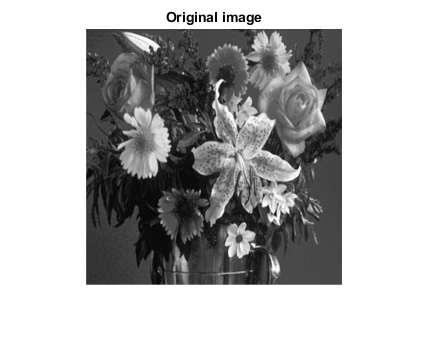
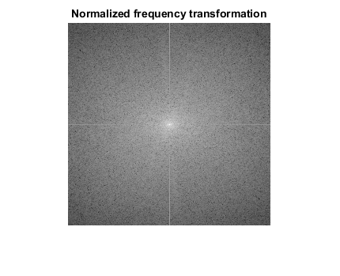
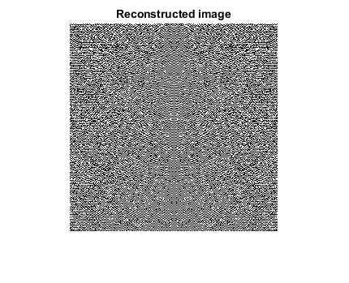
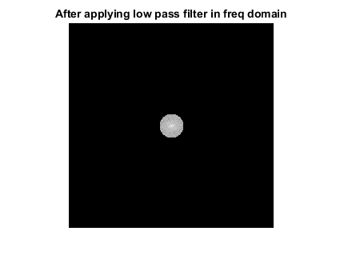
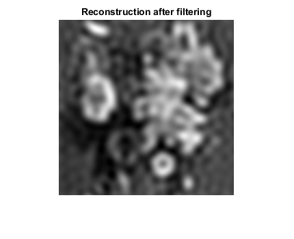

Contents
img = imread('input1.PNG');
img = imresize(img, [256, 256]);
gray = rgb2gray(img);
[r c] = size(gray);
imshow(gray);
title('Original image');
figure;

row wise
for i= 1:r
X(i,:) = fft(gray(i,:));
end
column wise
for j = 1:c
Y(:,j) = fft(X(:,j));
end
observations
y1 = fftshift(Y);
y2 = abs(y1);
f1 = log(1+y2);
f2 = max(f1(:));
f3 = f1/f2;
out = im2uint8(f3);
imshow(out)
title('Normalized frequency transformation')

reconstruction
rec = ifft(y1);
figure;
imshow(rec)
title('Reconstructed image')
Warning: Displaying real part of complex input.

low pass filter
[x, y] = meshgrid(-128:127, -128:127);
z = sqrt(x.^2 + y.^2);
c = z < 15;
k1 = y1.*c;
k2 = abs(k1);
k3 = log(1+k2);
k4 = max(k3(:));
k5 = k3/k4;
out2 = im2uint8(k5);
figure;
imshow(out2)
title('After applying low pass filter in freq domain')
figure;

image reconstruction
inv = ifft2(k1);
inv2 = abs(inv);
inv3 = max(inv2(:));
out3 = inv2/inv3;
out4 = uint8(out3);
imshow(out3);
title('Reconstruction after filtering')
